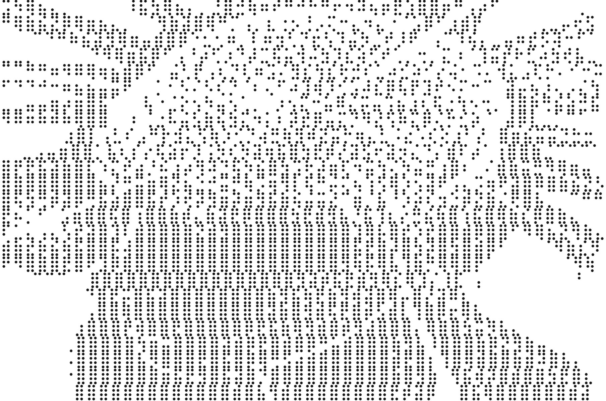
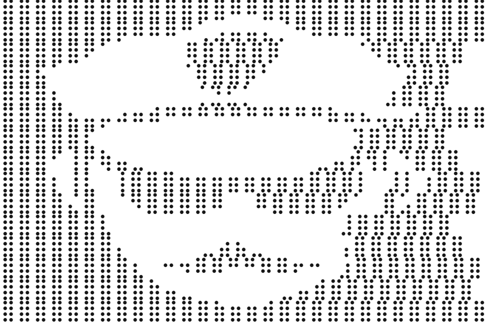
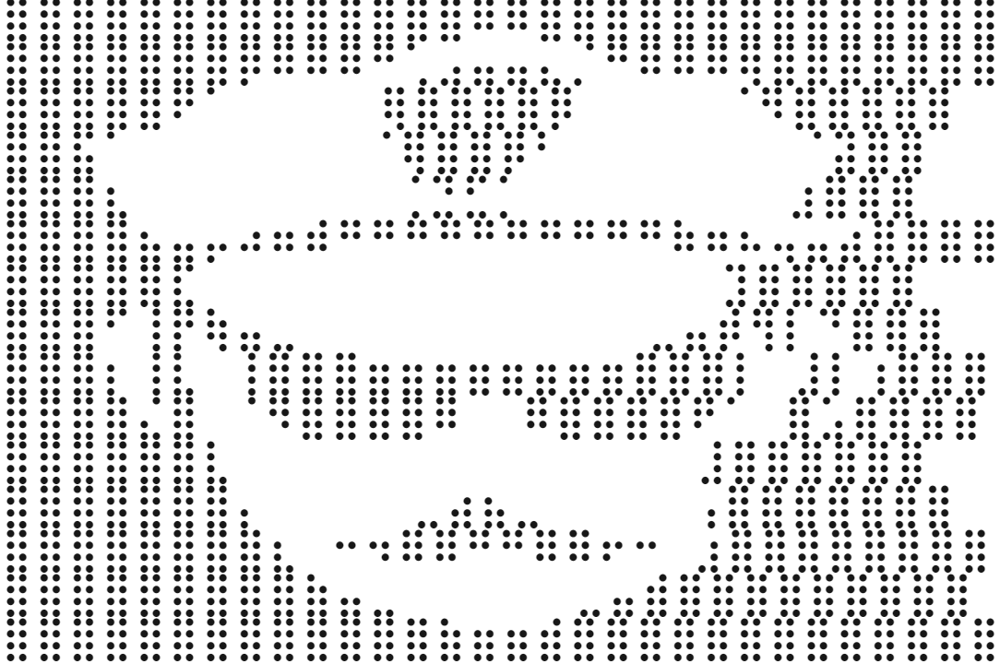

Welcome to the homepage for Spectrum, a sci-fi themed text based adventure game with an autistic undertone.
Introduction
In Spectrum, the player gets to move through a crazy, exciting and hilarious world created out of pure imagination. Every choice they make affects their experience of the game.In the beginning you have to input your name, age, gender and then allocate your skill points. Spectrum is focused on being completely inclusive to any player, for example the gender attribute can be set to anything! After inputting your details you move on to the skill point allocation section, you start with 10 skill points that can be allocated.
Skill Points
The main skills are Intelligence, Strength, Charisma and Autism with each one having it's own advantages. The player gets to allocate Intelligence, Strength and Charisma, but Autism is allocated from the points the player had left. Without knowing this a new player may make the mistake of allocating too many points at first and not having enough autism, which is arguably the strongest skill in the game!
Core Gameplay
The core gameplay of Spectrum is completely based around the skillful decision-making of the player. If you make bad decisions the game becomes harder, by the same virtue good decisions cause the game to become more forgiving.It may take a player multiple playthroughs to find the best ways to complete the game, with random chance also playing a part as some interactions are randomised. This keeps the game interesting and makes it feel different and new every time you play it!
Artwork
All artwork used in Spectrum is in the ASCII format. We think this type of art suits the game well and makes it more fun to play. Here are some examples:
 
